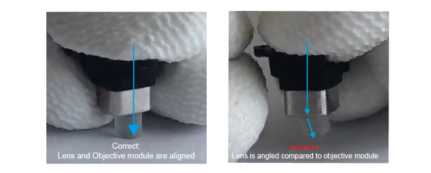

Assembling an OEPS V4.4 Miniscope#
{kind=link}
Acknowledgements#
The UCLA Miniscope is an ongoing open-source project from Daniel Aharoni’s lab. See the Miniscope V4 Wiki for more information about this project.
This assembly guide is specific to the OEPS V4.4 Miniscope and is provided on an “as-is” basis, you are always responsible for your own decisions regarding experiments. Please contact support@oeps.tech for questions about this guide or the OEPS product.
Tools and Materials#
ESD gloves (to safely handle the PCB and keep lenses and filters clean)
Soft cloth (e.g. cloth to clean eyeglasses with)
Tweezers/forceps
Torx T2 screwdriver
Compressed air spray
Scalpel/Biopsy punch
Padded Vice
Epoxy (Overview by UCLA team here)
DAQ and Coax Cable

1. Prepare#
a). Check all parts for any Delrin burrs sticking out. Scrape them off with a biopsy punch or tweezers.

2. Objective Module#
a). Stand one of the 3x6 mm lenses on a flat surface. Make sure the lens is standing on its flat side- it should not wobble.
b). Place the objective module directly over the lens and push down. Make sure that you are pushing in a straight line onto the lens, as any angle can cause chipping. You may have to use some force to do this, if the objective module is a bit tight (you can hear in the video that it makes a sound). Downward force is ok as long as the lens and objective module are completely aligned. If you see the lens stick out at an angle, remove it and reposition it.
Make sure the lens is completely flush with the body and does not stick out.
c). Once the lens is flush with the edge of the objective module, clean the edge of the lens with a soft cloth.
Warning
Important: sometimes extra burrs come off due to the first lens. If they are not removed before inserting the second lens, they can become trapped between the two, which interferes with your image and is difficult to remove. To prevent this problem, inspect the module for small Delrin burrs once more. If they are already loose, you can tap the module gently to allow them to fall out. Otherwise, you can scrape them off using forceps. Be careful not to scratch the lens.
d). Then, repeat this with the second 3x6 mm lens, again making sure that the lens is standing on its flat edge. Push the objective module down until the second lens is flush with the edge of the objective module.
3. Excitation Module#
Warning
Take great care not to scratch the filter, this will damage the coat that actually performs the filtering and will allow aberrant wavelengths to pass through the filter.
a). Locate the arrow on your 470nm excitation filter. This arrow must point towards the light source, in this case towards the LED on the Miniscope PCB.
b). Press the filter, arrow pointing down, into the excitation module. If it does not fit easily, use a scalpel or biopsy punch to scrape out a small layer of the inner edges of the Delrin on the excitation module to allow the filter to click in.
4. Emission Module#
a). First, screw a self-threading screw into the hole on the side of the body, then remove the screw again. This is so that you can remove any small burrs that are generated by the self-threading screw, while the body is still unassembled and therefore easier to clean. Hold the emission module up-side down and tap to get these burrs out of the body. You can spray compressed air through the module to make sure it is clean.
b). Find your 4mm, 10mm lens. This one has only a very slight curve at one edge, and should be placed with the curved edge down (in contrast to the objective module lenses). Stand the lens on a flat surface, with the curved edge down. If you press it, it should wobble.
c). Press the emission module down on top of this lens.
d). Once it is secure, you can turn the module upside down and, using a cloth on top of the lens, press to ensure the lens is as flush with the module as possible.
e). Next, place the dichroic filter in the slot on the side of the emission module. The arrow must be facing downwards, towards the 4mm lens.
f). Look through the top of the module to check that there are no burrs or pieces of visible dust in the scope so far.
g). If it looks clean, place the half-ball lens in the round pocket on the side of the body. Secure it in place by attaching the excitation module using two screws.
5. Assembly#
a). Cut the extra tabs from the electrowettinglens PCB.

b). Screw the PCB to the excitation module using the two holes.

c). Carefully pre-bend the two circles in the PCB (do not press too hard, just gently shape them).
d). You can now put an EWL in between these circles and attach the objective module to the emission module. Check that the EWL is in the correct orientation.
e). Finally, use compressed air to clean out the sides of the pocket at the top of the scope. Make sure it is very clean, as any pieces that come loose here later on, will fall directly on your sensor and interfere with your imaging. Place the 525 nm filter in the pocket, with the arrow pointing down.
f). Remove the protective film from the PCB and close the sensor over the top of the scope. You will probably have to hold the PCB in place while you do a first test of the scope.
6. Test before securing#
a). Connect your Miniscope to a computer using a DAQ and a coaxial cable. Check that:
The EWL allows you to focus electronically.
The LED responds to you increasing/decreasing the value.
There are no visible specks on the image. It is worth moving the scope around a little to make sure there are no debris in the corners of the 525 pocket that can fall into view.
b). If the scope passes these tests, you can glue the PCB to the emission module. With the scope held in a vice, apply 5-min epoxy using a toothpick and leave to dry.
c). Once the epoxy is fully dry, screw in the PCB flaps.
Test the scope one final time, and you are ready to image!
Troubleshooting Assembly#
1) When I change the focus setting, the image does not change.#
This is almost always due to the PCB being incorrectly placed around the electrowetting lens and therefore not making full contact. Take a look at your objective module- do the screws need tightening so that the PCB and the lens are pushed closer together? Can you see any PCB stick out at the side? The circles of the PCB must fit neatly inside the objective module and touch the electrowetting lens.
2) There are marks on my image#
Dust and other debris can make their way into the scope at various positions. If the mark on your image is in focus, it is most likely a mark on the CMOS sensor of the PCB or the 525 filter. Clean both with a soft optics-safe cloth and test the image again. If the mark is large, see-through and out-of-focus, it could be dust on the lenses or the 495 dichroic. You will have to disassemble the scope to find the culprit, using compressed air to clean out places that are difficult to access. You want the center of your image to be very clean, however some dust/dirt can be inevitable, and users often reach a point where cleaning the scope more just introduces new marks. As long as marks are small and not in the center of the image, they should not greatly affect your imaging, but this depends on the application and is up to you to decide.
3) My scope looked clean, but now I see dark, in-focus marks/hairs#
These are often Delrin burrs that have come loose in the 525 pocket. The only solution is to unscrew the PCB flaps and remove the epoxy so that you can clean the sensor again. The easiest way to remove the epoxy is to very gently twist the Miniscope relative to the PCB to loosen the epoxy, the PCB should come loose. You can then remove the remaining epoxy with forceps so that you are free to reattach the PCB after cleaning.
Using the Miniscope#
Electrostatic and mechanical damage#
When assembling and using the Miniscope, please take care with the printed circuit board (PCB). The circuitry is exposed on the outside of the scope and can be damaged by electrostatic charges. Prevent this damage by never placing the scope on metal or other conductive surfaces and wearing electrostatic-safe gloves if possible.
Make sure that the scope is not physically bumped during experiments; this may lead to damage or very brief power losses in the scope, during which the electrowettinglens can reset to 0, losing your plane of focus.
LED intensity#
We see a lot of people using very high LED intensities during their experiments. Different versions of the Miniscope use different LED intensities/sensor sensitivities, so the % power setting that worked for you before may not be the most appropriate choice now. Always measure the light output of your Miniscope so that you know how much light you are sending to the brain, and take care not to bleach your sensor or saturate your signals.
Licensing#
This work is licensed under CC BY-SA 4.0.
To view a copy of this license, visit https://creativecommons.org/licenses/by-sa/4.0/